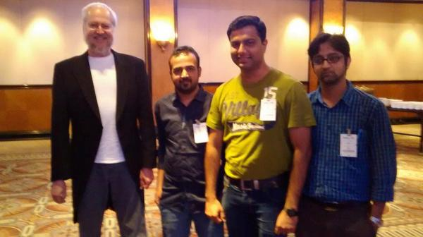

F O R W A R D
JavaScript: Then & Now!
like || love ? learnJS() : learnJS();
!loveAtFirstSight;
//Even I hated it initially!
2010 AF:
myFirstEncounter();
Common (mis)Understanding:
- JavaScript is not a language.
- Doesn't even compile.
- Written in HTML file.
- Runs only in browser.
- Is it Still in Use?
- Worst case, ...
What can we do with JavaScript?
- May don't wanna learn it!
- May avoid learning it even if forced to!
- May Ignore it!
Wait! Before You IGNORE it:
- #1 Language: http://redmonk.com
- Most hated to most loved language.
- Most trending language on Github.
- NPM is largest module repository.
- JavaScript is everywhere.Can't hide.
- ES6 is coming!
Questions:
- Birth Year?
- Birth Place?
- Birth Name?(Add Java cos its popular!)
- Father? $P
Sayin ain't enough!
Show Time*
* Powered by JavaScript! $P1995 BF: Why Most Despised?
- Victim of B#@!# War!
- Dealing with the Dirty DOM!
- Most Misunderstood Language.
2004 AG: Gmail AJAXed us:
- Pioneered AJAX; Engineering Front End!
- Storage limit?
- Date released? $P
- No page reload. April fool!
- XHR vs fe#@h()?
2006 AJ: jQuery's here for rescue!
- First solution for browser differences.
- jQuery == JavaScript;
- Creator? $P
- Writer of Secrets of JavaScript Ninja.
2008 AJ: JavaScript Good Parts Book!
- Discovery of the Decade!
- One of best books for JavaScript.
- Author? $P
- His Creations?

Douglas Crockford @ JSChannel 2014
2009 AF: JavaScript Jumped Browser!
- How ?$P
- Server Side Language.
- Learn Once, Code Everywhere, Run ...
- Chat App == today's Hello World;
2010 Ai: No Flash on iPhone/iPad!
- Beast feeding on small animals.
- Third Party product coming in way.
- Adobe stopped supporting Flash.
- Go HTML5 Way! $P
Present: Shower of JavaScript:
- BackboneJS
- EmberJS
- AngularJS
- ReactJS
- NodeJS / ioJS
- Yeoman, Bower, Gulp, ...microjs.com
Paradigm Shift: Client Driven Apps
- Server Only for Data/Transaction.
- I will call you if I need you.
- Rich Client Side Apps.
- Offline Apps.
- Why this K...? $P
Let's learn something!
Crash Course*
* Mini XTR on demandJS is loosely typed & dynamic language. $P
Datatypes:
- number
- string
- boolean
- object
- undefined
- null
- symbol (in ES6)
JS functions are first class citizens.
Functions are callable objects:
- call()
- apply()
- arguments {}
Array object methods:
- forEach()
- indexOf()
- reduce() $P
- map()
- filter()
- some()
- every()
Find common between 2 arrays
Common between 2 or more arrays:
var a = [1, 3, 2, 5, 3, 7, 3, 5, 9, 0],
b = [2, 4, 7, 5, 1, 2, 8],
c = [5, 3, 7, 6];
// Result is [5, 7]
var a = [0, 1, 2],
b = [3, 4, 1],
c = [4, 1],
d = [8, 1, 9];
// Result is [1]